Catznip R7
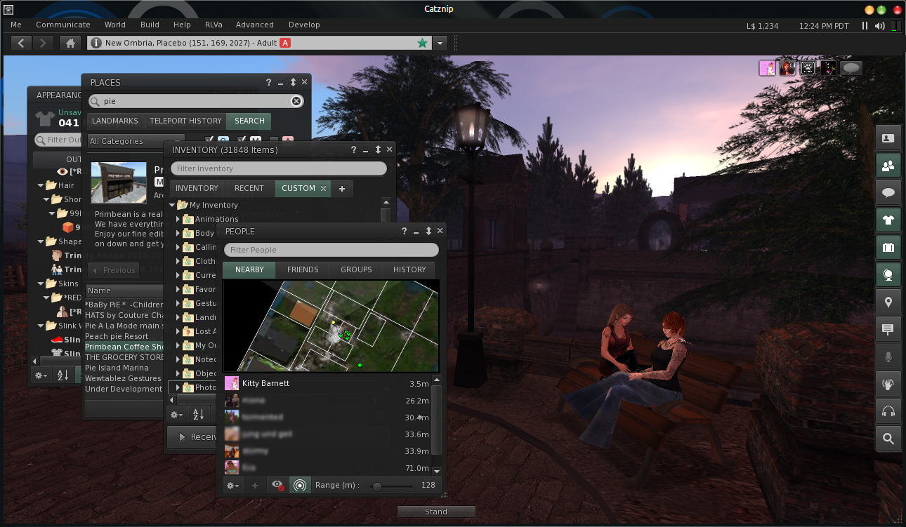
Wow! Ok, this release has been a massive undertaking that went on far longer than it should have. We got off to a slow start thanks to some RL and then bogged down as a number of our internal projects matured to the point of release. We always plan to add new things in odd numbered releases and the bug fix and polish the even numbered ones but might have gotten a bit carried away this time.
There is so much new in this release it's difficult to know where to start. But will mentioning the brand new wiki, it's a work in progress as there is a lot to document fully and that is going to take time, so rather then hold things up further we're going to show and tell what we can and worry about that later.
We added a new view to the Appearance Tools and buttons for layer ordering, our own Build Tools with a unique eye dropper tool, copy paste and axis manipulation, separate Chat Alerts for both local and IM/groups. Detach Folder lets you remove groups of worn objects with a single click, Font Selection allowing for different UI & Chat fonts (also the awesome Open Dyslexic Font) and Group chat got some more love with bold names and better sorting with the new ability to 'Snooze' rather than just close and end the session.
The Mini Map was made awesome. Really.
We added the legacy places search to both the main search floater and to the smaller places floater for quick and easy access.
On the User Interface side, Inventory gets a lot of attention with a new custom tab and fixed copy & paste. The people floater got a total overhaul as well as a massive amount of reworking.
I've probably missed out a ton of new things (like the awesome derender, the ability to right click on mesh attachments and a mess of RLVa bugfixes).
Read the full Release Notes and Download.
Appearance Tools
Appearance floater has been over hauled with a new 'Inventory View' display option for the wearing panel and quick up/down icons to reorder items worn on the same layer. '''Find Original''' has been added tot he context menus and opens an Inventory floater.
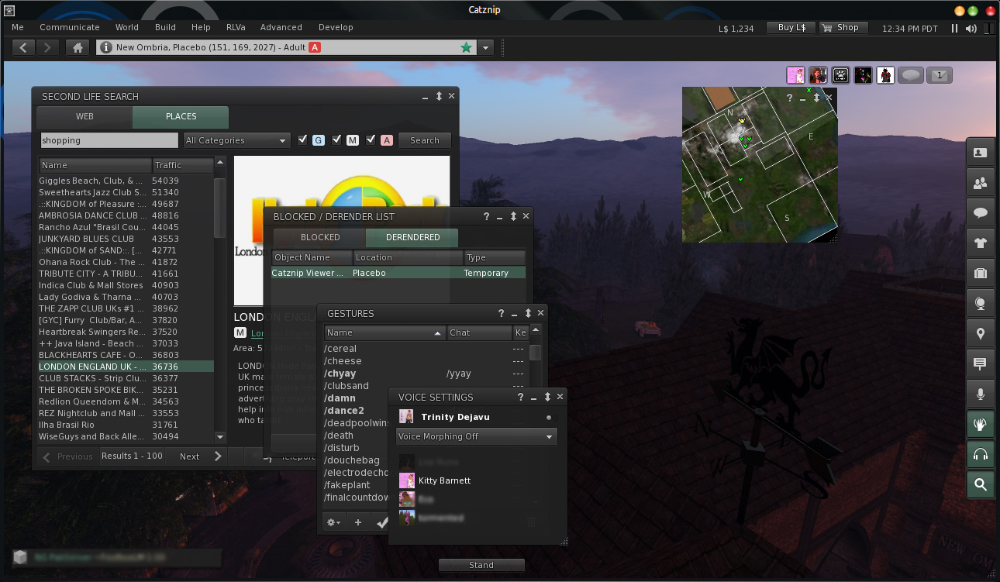
- added : up/down (re)ordering arrows shown for wearable types with more than one worn wearable
- added : "Appearance" sort order to the wearing panel which sorts items in (more or less) order of appearance on the avatar
- added : "Sort by" menu on the "Wearing" panel's gear menu to control the item's sort order
- added : "Find Original", "Properties" and "Detach Folder" options on the list item context menu
- added : ability to switch between a list view and inventory view of currently worn items
- changed : new toolbars for the outfit list and wearing tabs
- changed : show attachment point names for worn attachments in the wearing appearance panel
- fixed : the currently worn outfit folder isn't selected when opening the appearance sidepanel floater
- fixed : "Inventory List Refresh" decimates FPS after opening the "Edit Appearance" item list panel (with this change the frame rate will still be impacted, but only when the list control is currently visible).
Build Tools
Limited new build tools added including unique pipette pickers, parameter copy and paste, edit object at root, adjustable object axis and ability to rez objects under the land group even across parcel boundaries.
This is a long way from what we have in mind for the build tools so should be seen as a stop gap to make Catznip competitive with other TPV's extended controls.
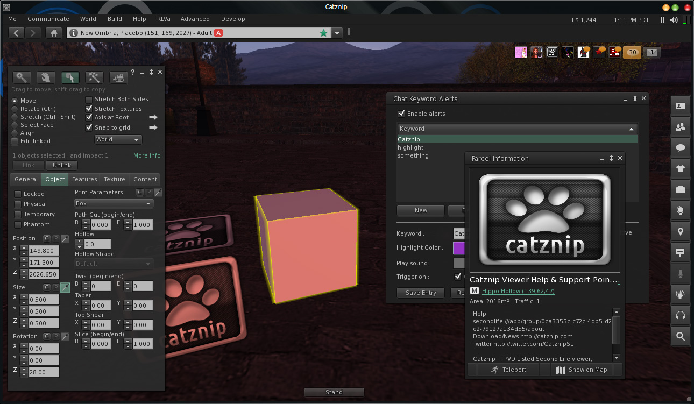
- added : 'Axis at Root' checkbox on the build floater to position the axis on the center of the first (root) object in the selection rather than the center of the bounding box of the entire selection
- added : axis options floater to control the "AxisPosition" and "AxisOffset" settings
- added : copy/paste buttons to the build floater for position, size, rotation and prim parameters
- added : pipette pickers for the texture and color on the build tools texture tab
- added : 'Refresh' button to the build tools' 'Contents' panel
- added : "RezUnderLandGroup" setting to rez prims under the land group rather than the avatar's active group
- rezzing a prim across parcel borders will rez it with the proper parcel's group
- changed : uncommented the "Restore to Last Position" option in the inventory context menu
- added two (ignorable) notifications: one for copyable and one for non-copyable objects to prevent accidental usage
Chat Alerts
- added : highlight matching categories to allow for conditional highlights
- added : apply different highlighting masks on chat, IM and group/conference chat messages
- added : highlight parsing callback functionality + working sound and flash triggers in the chat history control
Detach Folder
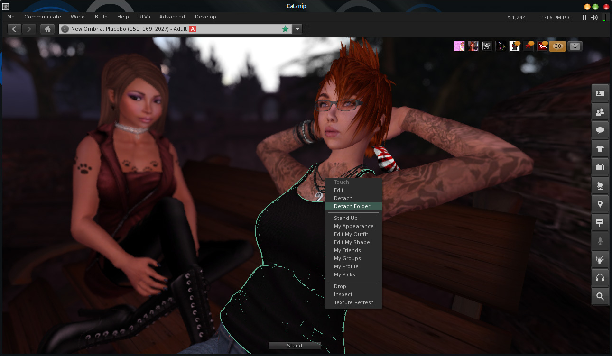
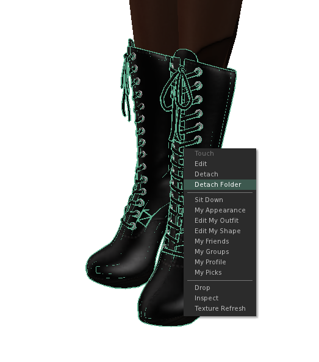
- added : "Detach Folder" as a context menu option for worn attachments
- detaches the selected attachment and all other worn items in the same folder
- changed : only enable "Take Off/Detach Folder" if the folder has two or more worn items in it
Font Selection
- added : preferences options for fonts used by the viewer
- 'UI' - font used across the user interface
- 'Monospace' - font used for scripts
- 'Chat/Notecards' - font used in nearby chat, IMs and notecards
- added : PTSans Font (UI & Monospace)
- added : Open Dyslexic Font http://dyslexicfonts.com/
- added : Source Sans pro (UI & Monospace)
- added : Ubuntu Fonts (UI & Monospace)
Group Enhancements
Group moderators now show bold and sorted at the top in the participants list.
- added : show moderators in bold in the group participant list
- also changes the sorting by status first and then by name
- added : moderators' names show in bold in group chat
- for header style chat "(Moderator)" is added to the username
- added : "Receive chat" in the general group profile panel to control whether incoming group chat sessions will spawn
- added : "Snooze Session" menu option on the group chiclet context menu to temporarily snooze a group chat session
- duration of the snooze is controlled by "GroupSnoozeTime"
- since names tend to resolve at the same time the list will only resort once per frame
- changed : don't sort the user's own name at the top of the participant list
- changed : default sort order for participant list set to "By name"
- changed : base the snooze start time on the last received message
- fixed : changing the sort order for one participant list doesn't change it for all others
- fixed : group participant list doesn't resort itself when an avatar name resolves
Inventory Enhancements
Inventory Floater Overhaul
- added : "Show Filter" and "Collapse All" button to the main inventory floater
- added : "Separate Text Filters" inventory gear menu option to use different filter text for each tab
- added : sort button to the inventory floater's toolbar panel
- sort options were removed from the main gear menu and moved to the sort menu
- added : "Default action" button to the inventory toolbar to replace the three button row
- added : action fly-out button to offer multiple actions for the current selection
- added : "Show Received Items Panel" option to the inventory floater gear menu
- added : "InventoryDnDCheckFilter" setting to keep current drag-and-drop inventory behavior or restore "legacy" behavior
- behavior changed as a result of EXP-1335
- allow moving an object's folder as long as one item passes the filter when "InventoryDnDCheckFilter" is TRUE
- changed : tightened the inventory floater layout
- moved item count to the floater title
- reduced vertical whitespace
- changed : moved the "Upload" sub-menu from the top to the bottom of the inventory add toolbar menu
- changed : "Collapse All" will not collapse top-level folders that are currently open
- changed : removed "Save Texture As" and "Share" menu options from the inventory gear menu
- changed : moved "Find All Links" from the gear menu to the inventory item context menu and the fly-out actions menu
- fixed : "Find Original" from the "Recent" inventory tab doesn't select the original item
- fixed : additional inventory floaters are not destroyed when closed
- fixed : "Received Items" panels on secondary inventory floaters are non-functional
- fixed : clicking the "Received Items" button changes the visible toggle state on all open inventory floaters
Inventory Tabs
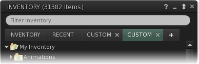
- added : user-add'able inventory panels to the inventory floater by clicking on the "+" tab
- added : tab remove callback to the LLTabContainer
- added : "Open folder in New Tab" inventory category context menu option
Inventory Cut & Paste
- changed : don't hide/filter inventory items that have been "Cut"
- changed : don't move "Cut" inventory items to the trash
- changed : "Cut" inventory items now have a distinct visual look
- fixed : can't "Cut" folders that contain worn items
- "Cut" folders were being checked for "can move" and "can remove"
- "can move" contained virtually no checks so the relevant "can remove" checks were moved over and the "can remove" condition dropped
Legacy search
The legacy places search has been added to the main search floater and a compact version added to the Places floater. These combined really make finding places a lot quicker and we hope will highligh the advantages of UI based searching in the viewer to Linden Lab.
- added : legacy places search tab panel to the general search floater
- added : "Search" panel to the places floater
- changed : commit the current "Search Places" sidepanel search when the search editor looses focus
- changed : refresh the current "Search Places" sidepanel search when user changes the category or maturity
Mini Map
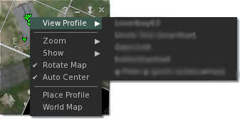
Overhauled Mini Map (CTRL+SHIFT+M in the viewer) can now show the world map image as a backround with parcel lines rendered over the top, special parcel flags are also shown (In addition to objects and such). Zoom menu has been redone with sensible settings.
- added : property line overlay on the minimap
- added : (optionally) color collision parcels a transparent red
- added : (optionally) show for-sale parcels with a yellow highlight on the mini-map
- controlled by 'MiniMapForSaleParcels', defaults to off
- added : "MiniMapObjects" setting to control the rendering of objects on the minimap
- added : (optionally) use world map tile texture for the mini-map region texture
- added : "View Profile" context menu item for singular and context sub-menu for multiple dots on the mini-map
- added : "Place Profile" menu item to the mini-map context menu
- added : user-configurable color setting for the property lines on the mini-map
- changed : removed title bar from the mini-map + fixed vertical centering of directions
- changed : mini-map zoom levels for "Close", "Medium" and "Far" options
- changed : moved zoom options into a "Zoom" sub-menu
- fixed : the inspector tooltip stays visible for too long and gets in the way
- params should now largely be identical to the legacy tooltips
Object Blacklist
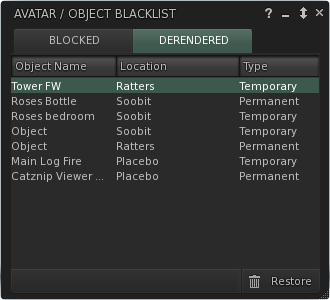
Brand new derender that is unique among TPV's with both session and persistent removal of objects, removed entries instantly rerez back in-world without requiring a tp'ing away and back or relog.
- added : basic derender functionality ("Derender" option on the object context and object gear menus).
- Derender will prevent the object from rerezzing.
- added : derender list floater (also contains the mute list)
- added : the ability to remove entries from the derender list and have them reappear in-world without requiring a teleport/relog
- added : persistent derender option ("Block Visually" option on the object context menu)
- changed : pop-up the "blocked" floater with the entry highlighted when derendering a new object
Usability Enhancements
Parcel Inspector
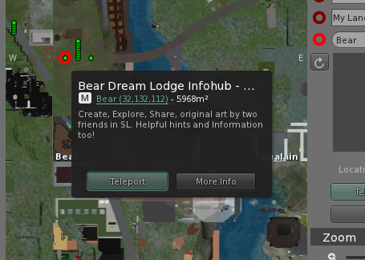
- added : parcel/location inspector for the world map and [[Mini Map]]
- changed : show parcel size and for sale price on the location inspector
Parcel/Landmark Floater
- added : new parcel information floater to replace LL's default places information sidebar panel
- changed : use the new floater to display landmark information
Rigged Mesh Attachment Menu
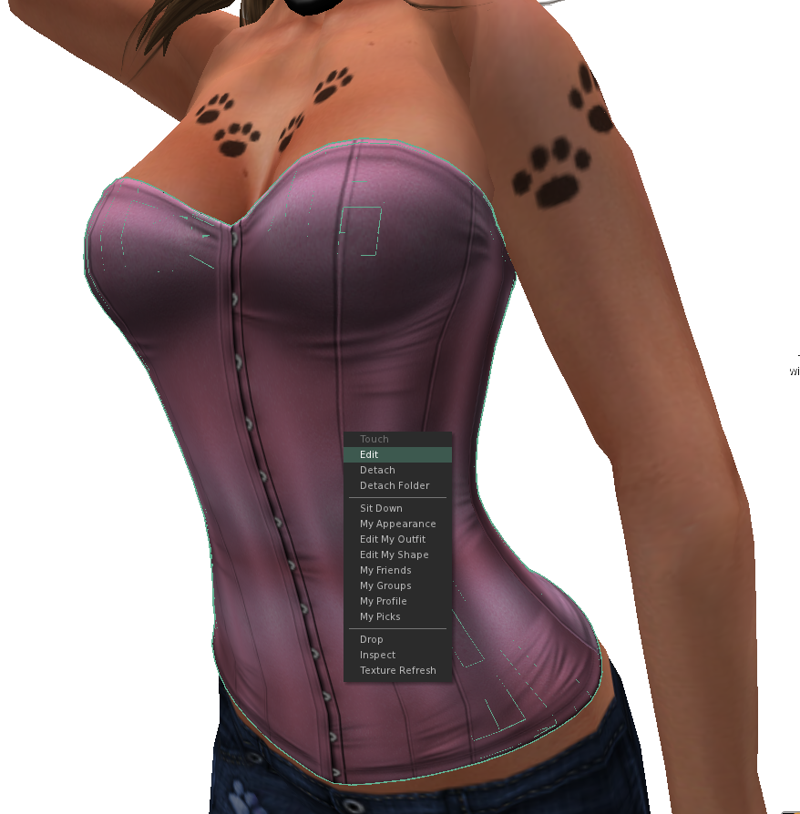
- fixed : can't right-click rigged mesh attachments to detach them
- fixed : can't right-click other avatar's rigged mesh attachments
Texture Refresh
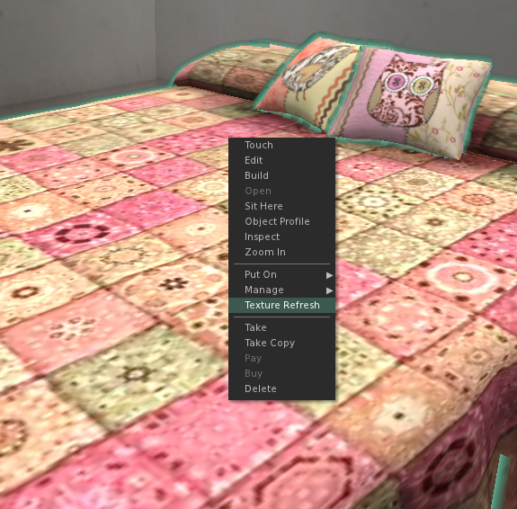
- added : "Texture Refresh" to the context menu for objects and attachments (self and others)
- forces all applied textures (and sculpt maps) to be refetched
User Interface Reworking
Pretty much reworked all of the key floaters and cleaned up a lot of the UI. Lot of work done on the people floater with regards to names which are now handled better with added support for displaying both usernames and displaynames. This is on going.
- added : "Show Blocked List" and "Toggle Mini-map" toolbar buttons to the 'Nearby' tab
- added : "Show names as" sub-menu to the nearby, friends and recent people gear menus to specify the displayed name format
- changed : moved the "Sort by" options on all people panels to a child menu
- changed : avatar names fill the entire width of the floater
- changed : the avatar list item name field overlaps (currently) invisible children
- changed : default for 'NearbyPeopleViewMask' from nearby only to nearby + current parcel + current region
- changed : reworked the About floater
- changed : people floater/panel UI review
- changed : places floater/panel UI review
- changed : appearance floater/panel UI review
- changed : preferences clean-up
- changed : Group invite panel clean-up
- changed : voice controls floater clean-up
- changed : search/replace floater clean-up
- changed : script recovery floater clean-up
- changed : script queue floater clean-up
- changed : sound and animation preview floaters clean-up
- fixed : layout of graphics preferences panel
- fixed : hiding avatar icons leaves an empty space and doesn't shift the name to the left
Voice Controls
- added : per-avatar voice volume slider in the "Voice settings" floater
- fixed : enabling voice causes the speaking indicator to appear underneath the text column in the nearby people panel
- fixed : speaking indicator is visible in friends and history people panels
General Bugfixes & Minor Changes
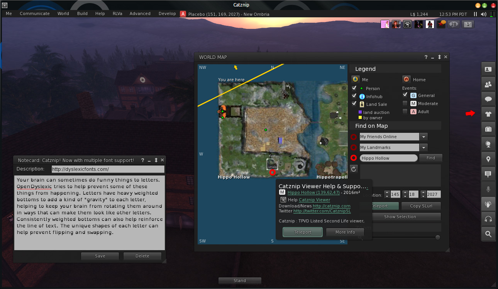
Automatic Updates
Future updates can now optionally be downloaded by the viewer in the background.
- changed : redesign the update experience
- used Trinity's redesigned update floater
- changed the DownloadBackground* notifications to be more descriptive
- changed : redesign the update experience
- review of optional and required updates with notification before download
- review of optional and required updates with notification before installation
- clicking "Later" will not show the update reminder for the next 48 hours
- if installer is available at start-up, follow the "download complete" code path rather than just running the updater
- normalized 'UpdaterServiceSetting' values and actually made it do something useful
- changed : use the new icon set for the installer
- fixed : combobox dropdown opens behind other UI elements when places on a modal dialog
Branding
- added : "Help / Catznip Blog" menu item to the login and main menu
- added : "Catznip Wiki" option to the Help menu
- changed : redirect "Help / Report a Bug" to the issue tracker
- fixed : "Help / Second Life Help" shows "Page not found"
- fixed : "PromptShowURL" action shows both the custom and default load external URL notifications
Crashes
- fixed : heap corruption warning due to freeing memory with free()
- fixed : crash in LLVOVolume::calcLOD()
- fixed : crash switching between the single- and multi-line chat bar if IMs aren't tabbed
- fixed : crash at logoff in LLTextBase::handleVisibilityChange()
- fixed : crash in LLRiggedVolume::update() with weight == NULL
- fixed : crash in LLViewerTextureList::removeImageFromList()
- fixed : crash in LLOctreeIntersect::check()
- fixed : multitude of crashes that can occur when the viewer gets disconnected
- fixed : potential script recovery crash at logon
Crash Reporting|Crash & Freeze Handling
- added : list of recent crashes to the "Crash Reports" preferences tab
- added : CATZ-14 Add freeze handling functionality to the watchdog class
- changed : CATZ-15 Create a minidump whenever a freeze is detected
- changed : explicitly report freezes to the crash server
- freezes are listed as "(freeze)" in the recent crashes panel
- fixed : saved settings aren't loaded by the crash logger
- fixed : existing .old file isn't deleted at start-up
File Dialogs
Fixed for ALL file dialogs in the viewer. You are no longer against the clock when opening or saving a local file.
- fixed : CATZ-16 WIP File picker dialogs block the viewer's main thread
- causes a server-side disconnect if the dialog stays open for around 1 minute
- changed LLFilePicker::getMultipleOpenFiles() to always take a callback
- changed LLFilePicker::getOpenFile() to always take a callback
- changed LLFilePicker::getSaveFile() to always take a callback
Inventory
- changed : don't support sharing inventory from the edit appearance embedded inventory panel
- changed : don't show "Library" landmarks in the landmarks places sidepanel
- fixed : empty folders remain visible in the "Recent" tab
- fixed : embedded notecards are silently copied to inventory rather than opened when 'ShowNewInventory' is set to TRUE
- fixed : saving an inventory filter and then restoring it results in all items being hidden
Localization
- fixed : online/offline notifications are broken on non-English locales
- fixed : "XXX is offline" when opening an IM doesn't show the name on non-English locales
- fixed : release notes URL isn't available on non-English languages
- fixed : not all non-English languages show Catznip as the application name
- fixed : localized "WebLaunchBlog" notification and removed obvious references to LL
- fixed : point non-English download links to the Catznip website as well
- fixed : "Help / Report Bug" refers to "Linden Lab" and "Second Life" on non-English languages
- fixed : various translation issues with the appearance floater sidepanels
Improved Object Inspectors
- added : "Detach" as an option to the object inspector drop-down menu
- also shown as the default action for attachments
- changed : visibility of object inspector drop-down menu
- always show "Touch" but disable if not available
- only show "Take" when it's available (and don't show it for attachments)
- don't show "Open" for attachments
- don't show "Sit Here" for attachments
- changed : match the order of the object inspector drop-down menu items to the object context menu
Settings & Related
- added : Xbox 360 joystick presets
- added : CATZ-1 Remember last used debug setting (per session only)
- added : revert certain debug settings to their default when running a new/different viewer version
- added : "Render Glow / Bloom" checkbox to the graphics preferences panel
- changed : draw distance minimum to 32m with increments of 32m (previously 8m)
- changed : flipped the default on some debug settings
- "DeclineTaskOfferToTrash" to TRUE
- "DoubleClickTeleport" to TRUE
- "ShowPropertiesFloaters" to TRUE
- changed : download feature and GPU table from viewer.catznip.com
- changed : never enable texture compression on cards with 512Mb VRAM or less by default
- changed : raise the minimum LOD from 0.0 to 0.125
Media
- fixed : Windows client now has Quicktime media support.
- fixed : Linux client now has FMOD for playing parcel audio.
Usability & Misc User Interface
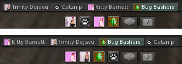
- added : rearranging an IM tab also rearranges the corresponding chiclet
- changed : restore a torn off IM floater to its previous tab position when redocking
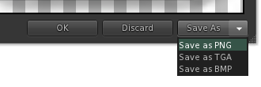
- added : "bmp" and "png" as file type options to the texture "Save As" file picker
- "Save As" preview button (or inventory context menu option) will show a file-picker with all three filetypes on Windows
- on non-Windows platforms it will show a file-picker for the last saved file format
- added : "Close All" context menu option to script chiclets to close all scripted dialogs from the same object
- added : CATZ-51 "Touch" attachment action in context menus
- added : "Touch" and "Edit" options to the "Wearing" panel gear menu
- added : CATZ-52 "Touch" and "Edit" options on the context menu when editing an outfit
- changed : add a checkbox to toggle "ShowOfferedInventory" from the "UserGiveItem" notification
- changed : delay initialization of the edit appearance embedded inventory panel until the user actually uses it
- changed : moved "Conversations" viewer menu option into the "Communicate" top level menu
- changed : tightened up the IM session floater
- changed : don't show both "Sit Down/Here" and "Stand Up" at the same time
- changed : allow copy/pasting of a complete name or username in the avatar picker floater search
- changed : "FriendOnline" and "FriendOffline" notifications are logged to nearby chat and open IMs by default
- changed : don't initialize the "Destination Guide" or "Avatar Picker" floaters until the user actually opens them
- fixed : an empty return closes the active IM rather than hiding it (with CloseIMOnEmptyReturn enabled)
- fixed : "Play Inworld" doesn't audibly play sound when "Play sound from gestures" is unchecked
- fixed : LLGroupMgr::processGroupTitlesReply() floods the log during log-on
- we won't request titles unless the active group changes (and not until after login completes)
- fixed : LLLandmarkList::onRegionHandle() floods the log during log-on
- fixed : various missing local image file references
- fixed : script recovery halts if an upload encounters an error
- fixed : bottom-aligned toasts don't (re)align with the right side of the window after resizing
- fixed : the restored window size isn't stored when the viewer is maximized (Windows-only)
- fixed : pressing the up arrow doesn't skip over separators
- right-click on an inventory item and press the down arrow => skips over all disabled and invisible items and separators
- right-click on an inventory item and press the up arrow => skips over all disabled and invisible items but not separators
- fixed : hovering the mouse above/below the separator line doesn't highlight anything if the items above/below it are invisible
- right-click on the "Current Outfit" folder and hover on the separators
- fixed : clicking on a separator commits the wrong menu item
- fixes "Wearing Folder Occasionally Equips Entire Inventory!" https://jira.secondlife.com/browse/VWR-28494
- fixed : "Cancel" button on the 'local' snapshot panel doesn't work
- fixed : '%t' snapshot name format token is replaced with the current date rather than the current time
- fixed : "PaymentReceived" IM notification setting follows the nearby chat setting
- fixed : an empty return in the nearby chat bar doesn't close the conversations floater if it's docked (with CloseChatOnEmptyReturn enabled)
- Local chat log information changed from ...
[02:56] Second Life: secondlife:///app/agent/a9691bdb-ba37-452f-afba-51007c4139f1/about is online.
[02:57] Second Life: Teleport offer sent to secondlife:///app/agent/a9691bdb-ba37-452f-afba-51007c4139f1/displayname
... to ...
[02:56] Second Life: Catznip (catznip) is online.
[02:57] Second Life: Teleport offer sent to Catznip
... which is much more useful.
- fixed : "FriendOnline" notification (among others) logs SLurls to the nearby chat log
- fixed : "FriendOnline" notification (among others) logs SLurls to the IM log
- fixed : "PaymentXXX" notifications still log a SLurl to the log
- fixed : "TeleportOffered" notification isn't being logged to nearby chat or IMs
- fixed : don't try to update an edited wearable if we don't even have the floater up
- fixed : persisted group notices log to the group log on every relog
RLVa Updates and Fixes
- changed : @sittp no longer prevents @sit:<uuid>=force from succeeding if the target is >1.5m away
- changed : behaviors floater clean-up
- changed : locks floater clean-up
- changed : worn "nostrip" items show in the locks debug floater
- changed : visually disable "Take Off" and "Detach" on the wearing panel context menu
- changed : auto-deny PERMISSION_TELEPORT if the user is currently @tploc restricted
- fixed : "nostrip" doesn't have any effect when placed in the name of a folder that's a direct descendant of the inventory root
- fixed : llForceMouselook(TRUE) + issuing @edit=n on sit results in build floater popping up
- fixed : clicking chat toasts opens the speaking resident's profile when @shownames restricted
- fixed : can not delete a self-owned prim - that isn't sat upon - when @unsit restricted
- fixed : clicking "Show" on an inventory offer opens the inventory floater when @showinv restricted
- fixed : crash when executing @*this from an attachment that hasn't rezzed for the viewer yet
- fixed : only one wearable of each type is worn when @addoutfit restricted during log-on
- repro: set "ForceInitialCOFDelay" to 60 seconds before logging in while wearing multiple wearables of the same type
- fixed : @attach:<folder>=force will only wear one of each wearable type
- all wearables in the folder should always be worn regardless of replace vs add
- @attach<folder1>=force @attach<folder2>=force wears all wearables in folder 2 and only those wearables in folder 1 that aren't present in 2
- fixed : having a wearable type remove locked but not add locked triggers assertions
- repro: @remoutfit<shoes>=n while wearing shoes and then wear a shirt/jacket/... (or replace outfit)
- fixed : don't allow access to profiles or the place profile on the minimap when @shownames=n or @showloc=n restricted
- fixed : don't allow access to the place profile from the worldmap when @showloc=n restricted
- fixed : @setgroup<UUID>=force @setgroup=n forces the active group back to the previous group
- if an object is singularly holding a @setgroup restriction then it is now also exempt from it
- fixed : @notify<channel_number>;~Folder=add doesn't notify when a folder with the specified name is accepted/declined
- filter check was case-sensitive
- fixed : clicking on terrain doesn't deselect all currently selected objects *fixed : "View Notices" group context option opens the group as a sidepanel rather than a floater when 'ShowGroupFloaters' is TRUE
- internal : refactored handling of & fixed several issues relating to script permissions
- re-enabled the script caution question notification since we're piggy-backing on it
- notify when we're granting take controls (see notify_cautioned_script_question)
- always notify when we block attach when all attachment points are add-locked
- internal : properly support @*this=force from the LSL attach() event
- internal : folder locks (and cached wearable and attachment locks due to folder locks) show in the locks debug floater
- internal : Made mental note to test RLVa more on kitty.